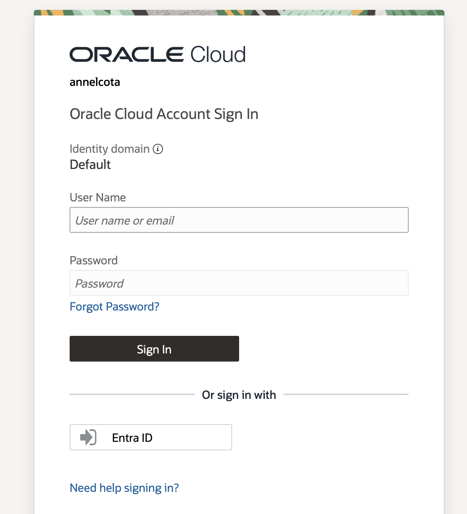

Microsoft Entra ID • OCI IAM • SAML SSO
Configured single sign-on between OCI IAM and Microsoft Entra ID using Entra ID as the identity provider and OCI IAM as the service provider.
This project demonstrates how federated authentication allows users to access OCI resources using credentials authenticated by Microsoft Entra ID.
Microsoft Entra ID – Acts as the identity provider for federated authentication.
Enterprise Applications – Hosts the OCI IAM SAML application configuration.
SAML – Enables single sign-on between Entra ID and OCI IAM.
OCI IAM – Acts as the service provider for OCI access.
OCI Identity Domains – Manages identity provider and federation settings.
Identity and access management, SAML-based single sign-on, identity provider configuration, service provider metadata exchange, attributes and claims configuration, and cross-cloud authentication.
OCI IAM service provider metadata was imported into a Microsoft Entra ID enterprise application to configure SAML single sign-on. Federation metadata generated by Entra ID was then imported into OCI IAM to establish a trusted authentication relationship between both platforms.
Configuration Flow:
OCI IAM → Entra ID Enterprise Application → SAML Metadata Exchange →
Configure OCI Identity Provider → OCI Sign-In Page → Federated Authentication
After activating the identity provider and updating the OCI identity provider policy, Microsoft Entra ID appeared as an available authentication option on the OCI sign-in page, validating the federation configuration.
